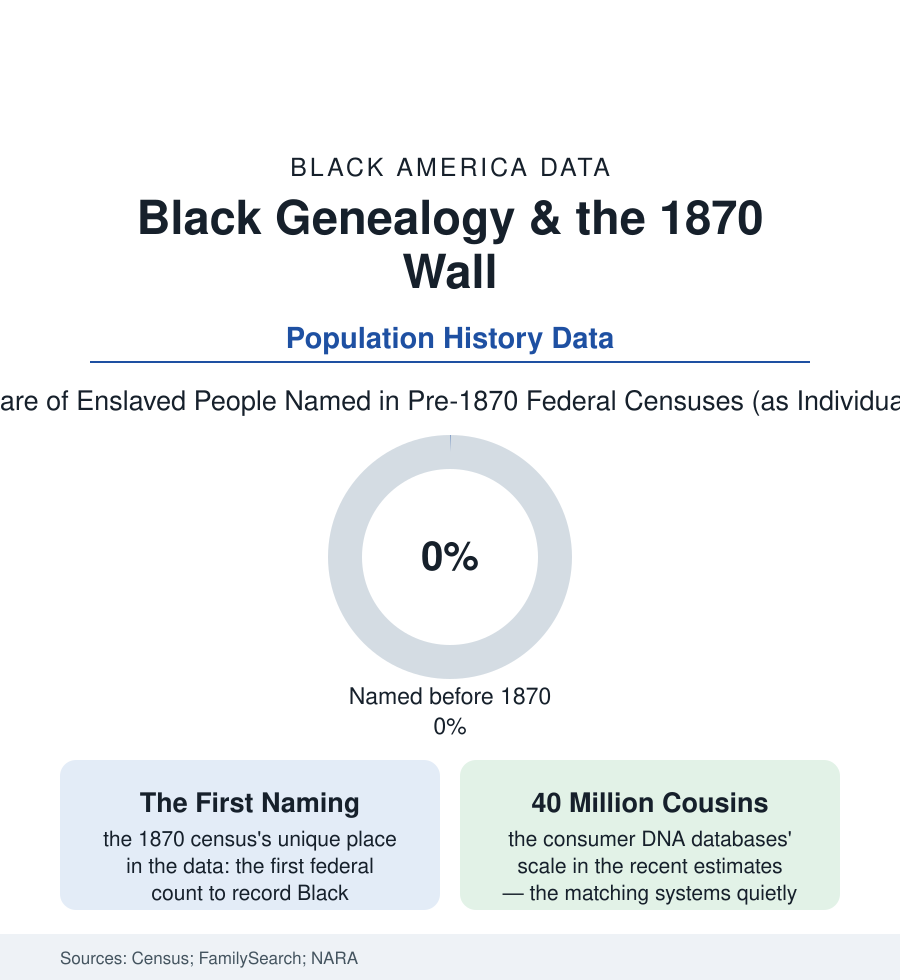

Black Census
The 1870 Wall: Genealogy, DNA, and the Search for the Named
Every Black family tree runs into the same wall — the 1870 census, the first to name the freed. What genealogy and DNA are doing to that wall is a data story. The roots file.

Every census article in this reference counts the living. This one counts the search for the dead — because for Black Americans, genealogy runs into a structure no other population faces in the same form: before 1870, the federal census did not record enslaved people by name. They appear in the schedules as tallies under an owner's name — age, sex, a check mark. The wall that creates, and the tools now breaching it, are a data story of the first order. It is the only wall in American genealogy with a date for a name.
The Wall and What Built It
The 1870 census — the first taken after emancipation — is therefore the most consequential document in Black family history: the first full naming, the page where the ancestors become findable as persons, four million entries whose descendants' research begins there and pushes backward into a record designed to withhold. What lies behind the wall, the archives' inventories describe with bureaucratic calm: the slave schedules' anonymous tallies; the plantation records — the ledgers, the bills of sale, the estate inventories listing people among the livestock and the furniture — held in the university and historical-society collections whose digitization the last two decades have raced; the Freedmen's Bureau's extraordinary archive (the labor contracts, the marriage registers — the Bureau solemnizing, on paper, the unions slavery had refused to record, the freed couples' names and children's names in the millions of entries the indexing projects have since made searchable); the Southern Claims and pension files, the church records, the Freedman's Bank registers whose signature cards recorded, for tens of thousands of depositors, the family details — parents, siblings, birthplace, former owner — that constitute, for many families, the single richest document of the slavery era, written by the institution that failed and took the savings with it. The genealogist's method in this terrain is itself a data discipline the profession's journals formalized: cluster research, the FAN principle (family, associates, neighbors — the ancestor findable through the named people around the unnamed one), the deed and probate archaeology that reads the owner's paper against itself until the people inside it stand up with names.
The DNA Breach
Into this paper wall, consumer genomics drove the second breach: the testing databases — tens of millions of profiles in the industry estimates — matching cousins across the documentary silence (the descendant of the sold-away sister finding, in a match list, the family that stayed; the white descendant matches whose family papers hold the ledger the Black descendant needs — the collaborations the genealogy societies now formally encourage, archives changing hands at kitchen tables and in match-message threads), the ethnicity estimates assigning the regions of Africa with improving resolution as the reference panels grow — their African sampling long the databases' thinnest layer, the estimates' vagueness for this population a data-equity file in itself, narrowing as the African reference data finally build. The professional infrastructure has compounded in the same years: the indexing armies (the Bureau records' millions of names keyed by volunteers), the university projects recovering the enslaved by name from the runaway advertisements and the sale records (databases of the named enslaved now counting into the hundreds of thousands — each name a wall-breach), the 1870-movement of the family-history world treating the census page as what it is: not a beginning but a border, increasingly patrolled from both sides. The census's own history closes the file's loop: the state that counted the enslaved as fractions and tallies in the apportionment arithmetic of the founding documents now funds the archives that name them — the count correcting itself, a name at a time, a century and a half downstream.
Reading the Genealogy Data
The 1870 wall is the census file's confession: the count was built, at the origin, to see some people as numbers and others as names. Every tool in this article — the index, the ledger, the chromosome — is an attempt by the descendants to revise the count retroactively, restoring to the schedules the only datum that was ever the point. The names are going back in. The data say so, one match at a time.
More in Black Census
The Black Population of the United States: Size, Definitions, and Distribution
The Black population of the United States totals 52.8 million — 15.4 percent of the nation. How the Census Bureau defines and counts the population, and where it lives.
Black Median Household Income in the United States
Black median household income stands at $56,490 in the Census Bureau's annual income report — how the figure is measured, how it compares, and what drives it.
The Black Poverty Rate: Levels, Children, and the Long Trend
The official Black poverty rate is 17.1 percent — against 11.1 percent nationally and 7.7 percent for non-Hispanic White Americans. How poverty is measured and what the data show.
Source: U.S. Census Bureau historical schedules; FamilySearch and Freedmen's Bureau records projects; National Archives; consumer genomics research and MIT Technology Review estimates.